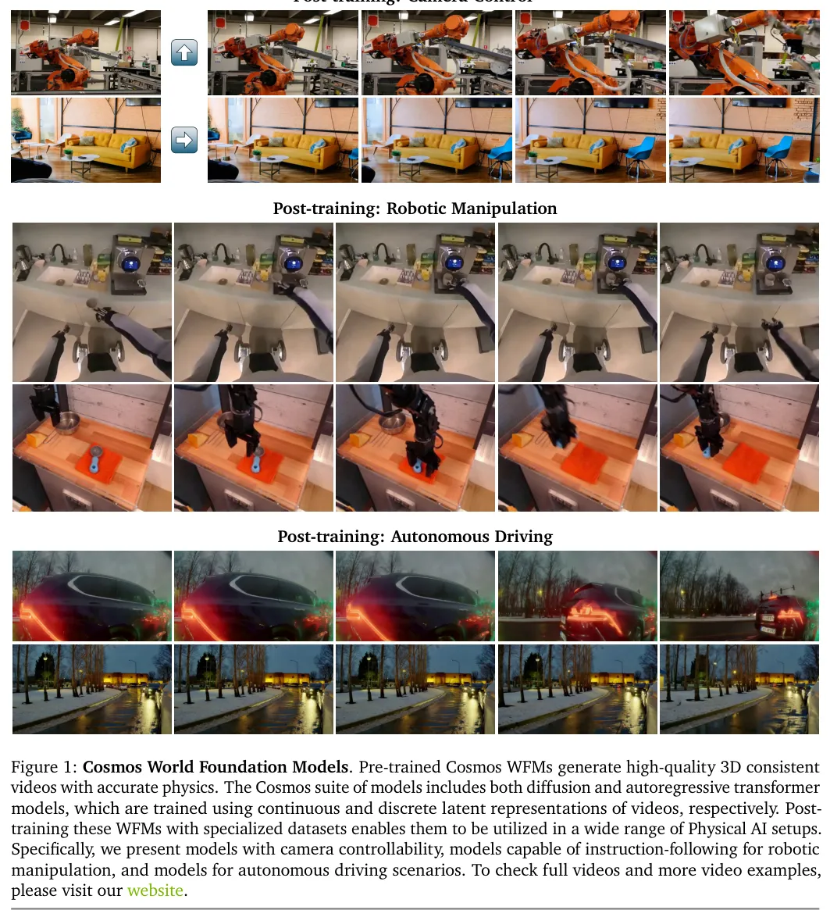
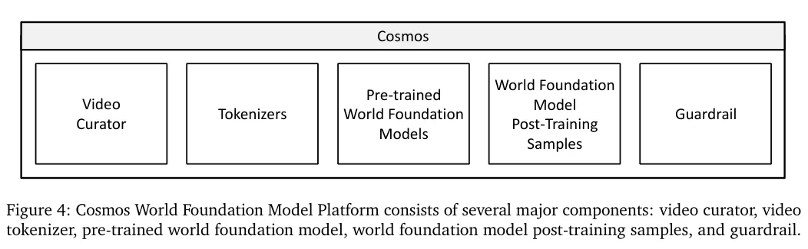

Cosmos WFM · 精读配图
Cosmos 数据流转与架构图解
基于 NVIDIA/Cosmos-Tokenizer 开源源码（Apache-2.0） + 论文 Cosmos World Foundation Model Platform for Physical AI（arXiv 2501.03575）绘制。每个环节标注张量形状、真实配置与来源置信度。
✅ 源码确认（含文件行号）
📄 论文明写
⚠️ 未公开（训练码不在开源仓）
图 1 · Tokenizer 数据流（以 Discrete Video「DV」为例）
视频 → Haar 无损前处理 → 因子化因果编码器 → 量化/AE → 解码器重建。形状按 DV 配置：空间压缩 16×、时间压缩 8×。
① 输入视频 configs.py
RGB 视频，in_channels=3
x : [B, 3, T, H, W]
Patcher3D(haar, patch_size=4)
② Haar 小波前处理（无参·可逆） patching.py
做 log2(4)=2 级 3D 离散小波（DWT）。每级把 T/H/W 各 ÷2、拆成 8 个子带拼到通道维（LL…HHH）。信息不丢（子带全保留），requires_grad=False。
→ [B, 3·4³=192, T/4, H/4, W/4] (通道×64, 时空各÷4)
conv_in（factorized 因果卷积）
③ conv_in：空间+时间分离的因果卷积 layers3d.py:773
CausalConv3d(k=(1,3,3)) 只做空间 → CausalConv3d(k=(3,1,1)) 只做时间。factorized=空间与时间解耦；causal=时间维只 pad 过去、不看未来。base channels=128。
→ [B, 128, T/4, H/4, W/4]
3 × Down Stage
④ 3 个下采样 Stage layers3d.py:790 §4.1
channels_mult=[2,4,4] → 通道 128→256→512→512。每 stage：2× CausalResnetBlockFactorized3d + （当分辨率=32 时）CausalAttnBlock(空间注意力)+CausalTemporalAttnBlock(时间注意力) + CausalHybridDownsample3d。
下采样次数：空间 log2(16)−log2(4)=2 次、时间 log2(8)−log2(4)=1 次（空/时独立控制）。
下采样次数：空间 log2(16)−log2(4)=2 次、时间 log2(8)−log2(4)=1 次（空/时独立控制）。
→ [B, 512, T/8, H/16, W/16] (累计 空间16× 时间8×)
mid + norm + conv_out
⑤ mid 瓶颈 + 输出头 layers3d.py:826
mid = ResnetBlock + (空间attn+时间attn) + ResnetBlock；末端 CausalNormalize + factorized conv_out 投到 z_channels。
→ z : [B, 16, T/8, H/16, W/16] (z_channels=16)
分叉：连续 or 离散
⑥a 连续路线（CV） continuous_video
AE 形式（formulation=AE），latent 直接是 16 维连续向量。空间/时间压缩 8×/8×。→ 喂 Diffusion WFM（§5.1）。
continuous latent : [B, 16, T/8, H/8, W/8]
⑥b 离散路线（DV）→ FSQ quantizers.py:71
Finite Scalar Quantization：bound(z)=tanh 限幅 → round_ste 四舍五入 → /half 归一化；再 codes_to_indices 用混合进制 basis 把每点映成唯一整数。
levels=[8,8,8,5,5,5] → 码本 64000，embedding_dim=6。→ 喂 Autoregressive WFM（§5.2）。
levels=[8,8,8,5,5,5] → 码本 64000，embedding_dim=6。→ 喂 Autoregressive WFM（§5.2）。
token indices : [B, T/8, H/16, W/16] ∈ {0..63999}
Decoder（镜像对称）+ UnPatcher3D 逆 Haar
⑦ 解码器重建 layers3d.py
结构与编码器镜像：上采样 ResBlock + 注意力 → UnPatcher3D 用 conv_transpose3d 做逆小波，精确还原分辨率。
x̂ : [B, 3, T, H, W] (重建视频)
图 2 · 量化分叉：连续 AE vs 离散 FSQ（含 FSQ 内部）
同一个编码器输出 z，两种约束方式 → 服务两种生成骨架。
连续（AE）：z → 瓶颈 → continuous latent(16ch)，不量化，全程可导。直接给扩散模型在连续空间加噪/去噪。
离散（FSQ） quantizers.py:143：
① bound(z)=tanh 把每维压进 [-half, half]；
② round_ste(·)=四舍五入到整数格点（前向 round，反向恒等 z+(round(z)−z).detach()）；
③ /(levels//2) 归一化到 [-1,1]；
④ codes_to_indices：混合进制 (zhat·_basis).sum()（_basis=cumprod([1]+levels[:-1])）→ 每个格点一个唯一整数 index。
为什么用 FSQ 不用 VQ：FSQ 无可学码本、无 commitment/EMA、天然满码 → 不会码本坍塌。仓里也实现了 VQ（argmin 最近邻查 nn.Embedding + commitment loss + STE）与 LFQ/ResFSQ，但默认 quantizer=FSQ。quantizers.py:307
图 3 · 预训练 WFM 两条路线（§5，论文）
Tokenizer 产出的两种表示，分别喂两种 transformer 生成骨架。
Diffusion WFM §5.1
输入连续 token。从高斯噪声迭代去噪出整段视频；transformer(DiT) 架构。含 prompt upsampler；评估 3D 一致性 + 物理对齐（§5.3）。
连续 latent + 噪声 → 去噪 → 视频
Autoregressive WFM §5.2
输入离散 token。像 GPT 一样逐块预测下一 token（cross-entropy）；含实时生成优化（§5.2.4）+ diffusion decoder（§5.2.5）把 token 渲染回高清。
离散 token 序列 → 逐块自回归 → 视频
图 4 · Cosmos 平台全景（预训练 → 后训练）
论文主张的 pre-training→post-training 范式（§2/§3/§6）。
① 数据清洗 §3
20M 小时 → ~100M clip(2–60s)；VLM 每 256 帧打 caption；H.264 GPU + Ray 编排。
→
② Tokenizer 开源
连续(AE)/离散(FSQ)；Haar 前处理 + factorized 因果编解码；SOTA 重建、2–12× 快。
→
③ 预训练 WFM §5
Diffusion + Autoregressive 两族，大规模视频自监督 → 通用「世界通才」。
→
④ 后训练 §6
小数据微调到：相机控制 / 机器人操作 / 自动驾驶。+ Guardrails 安全护栏(§7)。
图 5 · 论文原图（arXiv 2501.03575 · 逐字原文 caption）
从本地 PDF 抠取（pdf_figs），配论文原始英文 caption。注意：抠图文件号与论文 Figure 号有偏移，下方已按 figs.json 校准对齐。caption 末尾 … 表示原文较长截断。






来源与诚实边界：形状/配置/量化/小波/编码器结构均来自开源仓 NVIDIA/Cosmos-Tokenizer（✅ 标注文件行号）与论文 arXiv 2501.03575（📄）。训练损失（VGG 感知 / Gram / 光流 / 对抗）与 VGG 具体层不在开源推理仓、论文也未细化（⚠️），故图中未画其内部。Diffusion/AR WFM 的 DiT 细节以论文 §5 文字为准，未逐层展开。生成于精读会话，配 Fig 5/6 原图见 PDF。